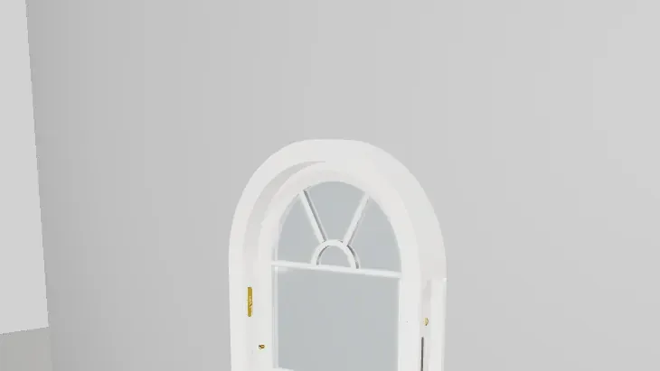
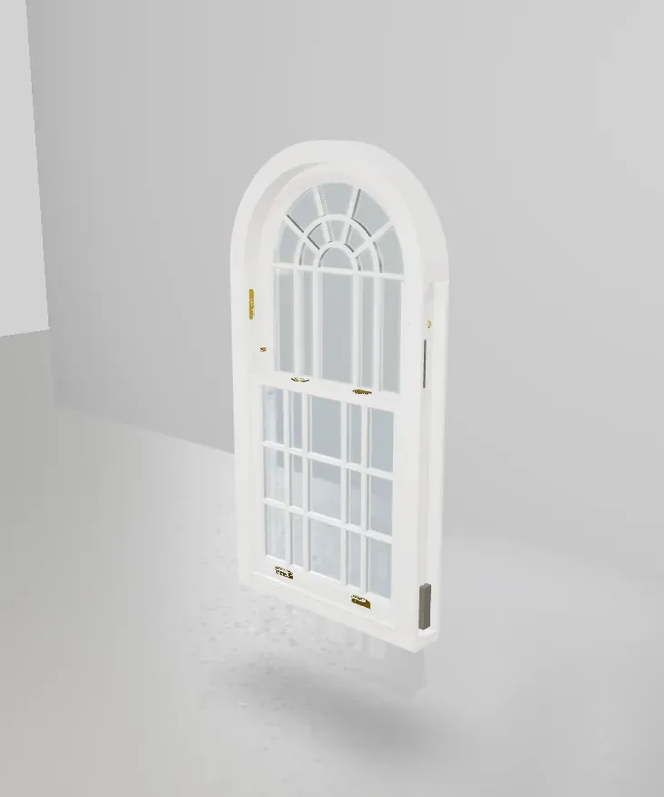

The Window Above the Door
A fanlight is the glazed panel above a front door or window — semi-circular or rectangular — that lets daylight into a Georgian hallway. The radiating "fan" of glazing bars gave the element its name, and no single detail does more to announce a period front door. We manufacture fanlights as fixed arched frames in engineered hardwood, with every classic pattern available, and you can design and price one online in 3D.
Design Your Fanlight in 3D
Choose the shape, set the sizes, pick the pattern — sunburst, hub & spoke, plain — and watch it draw itself with a live price.
Open the 3D ConfiguratorFanlight Patterns
- Sunburst — the full radiating fan: spokes bursting from a hub at the base, the pattern most associated with London's Georgian door cases.
- Hub & spoke — a half-ring hub at the spring line with spokes to the curve; available with one, two or three concentric rings for richer tracery.
- Half-hub — a lighter fan: the hub ring only, spokes running clear.
- Intersecting — interlacing arcs rising from vertical bars, for Gothic Revival doorways.
- Plain — the arch glazed clear, letting the shape speak.
Every bar is a true timber glazing bar with a curved spacer inside the sealed unit — crisp shadows outside, real depth inside. Nothing is stuck on.

Shapes & Sizes
Semi-circular fanlights are the classic; segmental (shallow-curve), gothic and elliptical heads are equally at home over doors and ground-floor windows. We manufacture to the exact width of your door case — templated on survey, because a Georgian arch is rarely a true semicircle after two centuries — and glaze with shaped, argon-filled double-glazed units. Slim heritage units are available where planning requires original sightlines.
Guide Pricing
| Fixed timber fanlight | Guide price |
|---|---|
| Arched fixed frame (semi-circular, segmental, gothic) | from £800 first m² + £400/m² additional |
| Half-hub pattern | +£280 |
| Hub & spoke pattern | +£390 |
| Sunburst pattern | +£560 |
| Intersecting tracery | +£450 |
| FD30 fire rating | +£150/m² |
Guide prices, August 2026, including double glazing and single colour finish. Price your exact fanlight — dimensions, pattern, colour — in the configurator.
Above Doors, Above Windows, In Gables
Fanlights are not only for doorways. We supply arched fixed lights above sash windows and casements as integrated single units — one frame, no clumsy joints — as well as feature roundels and gable windows. For a fanlight over a new opening, our measurement guide shows exactly what to record; for period openings we always template on survey.

Restoring a Georgian Door Case?
Send a photograph of the existing fanlight — we will match the pattern and quote within 48 hours.
Send a Photo Book a SurveyFrequently Asked Questions
What exactly is a fanlight?
The glazed light above a door or window, named for the fan-shaped pattern of radiating glazing bars typical of Georgian examples. Ours are fixed arched frames made to your opening.
Do fanlights open?
Traditionally most are fixed, and fixed frames give the slimmest sightlines and best value. Where ventilation is required we can supply an opening arched casement instead — see arched windows.
How much does a timber fanlight cost?
Fixed arched frames start at £800 for the first square metre; a sunburst pattern adds £560, hub & spoke £390. The configurator prices your exact size instantly.
Can a fanlight be double glazed?
Yes — every fanlight is glazed with a shaped sealed unit made to its template, with curved spacers following the bars. Slim heritage units are available for conservation work.
Related: arched sash windows · gothic sash windows · all arched & shaped windows